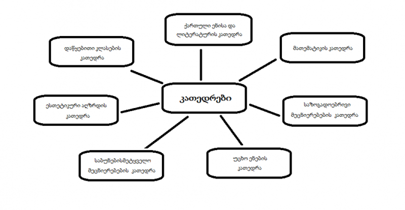

| მთავარი |
კათედრები
1. ქართული ენისა და საზოგადოებრივი მეცნიერებების კათედრა.
კათედრა აერთიანებს ქართული ენისა და ლიტერატურის, ისტორიის, გეოგრაფიის, სამოქალაქო განათლება, სამოქალაქო თავდაცვა
და უსაფრთხოების, საგზაო ნიშნები და მოძრაობის უსაფრთხოების საგნის მასწავლებლებს.
2. უცხო ენების კათედრა.
კათედრა აერთიანებს ინგლისური ენის, თურქული ენის, გერმანული ენისა და რუსული ენის მასწავლებლებს.
3. დაწყებითი კლასების კათედრა.
კათედრა აერთიანებს დაწყებითი (I და IV და II-III ) კლასის მასწავლებლებს (ქართული ენა და ლიტერატურა, მათემატიკა,
ბუნებისმეტყველება, ფიზიკური აღზრდა).
4. მათემატიკის, ტექნოლოგიებისა და საბუნებისმეტყველო საგნების კათედრა.
კათედრა აერთიანებს მათემატიკის და ისტ-ის, საბუნებისმეტყველო მეცნიერების საფუძვლების, ფიზიკის, ქიმიისა და ბიოლოგიის
საგნებს.საგნის მასწავლებლებს.
5. სპორტის და ესთეტიკური აღზრდის კათედრა.
კათედრა აერთიანებს სახვითი და გამოყენებითი ხელოვნების, ცეკვის, სპორტის, მუსიკისა და ჭადრაკის მასწავლებლებს.
 |